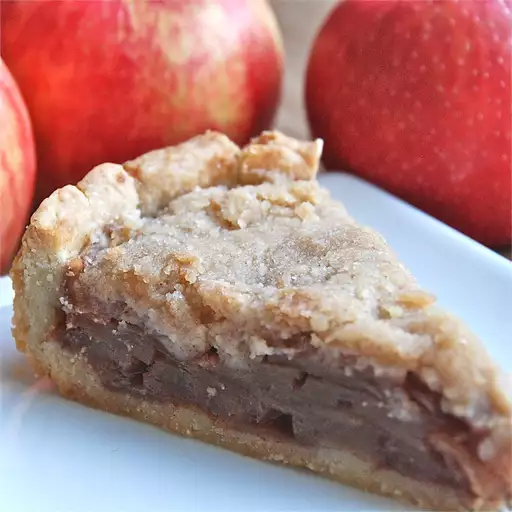

Apple Crumble Pie
Rating: 4.8 | 879 Reviews | 200 photos
This apple crumble pie is a yummy version of apple pie with a rich crumb topping. It was a hit with my boyfriend's pals in university whenever I made this favorite!
Ingredients
- 1 (9 inch) deep dish pie crust
- 5 cups apples - peeled, cored and thinly sliced
- ½ cup white sugar
- ¾ teaspoon ground cinnamon
- ⅓ cup white sugar
- ¾ cup all-purpose flour
- 6 tablespoons cold butter
Directions
- Preheat the oven to 400 degrees F (200 degrees C.)
- Arrange apple slices in unbaked pie shell. Mix 1/2 cup sugar and cinnamon; sprinkle over apples.
- To make the crumble topping: Place 1/3 cup sugar and flour in a bowl. Cut in cold butter with 2 knives or pastry blender until the mixture resembles coarse crumbs; spoon mixture over apples.
- Bake in preheated oven until apples are soft and top is lightly browned, about 40 minutes.